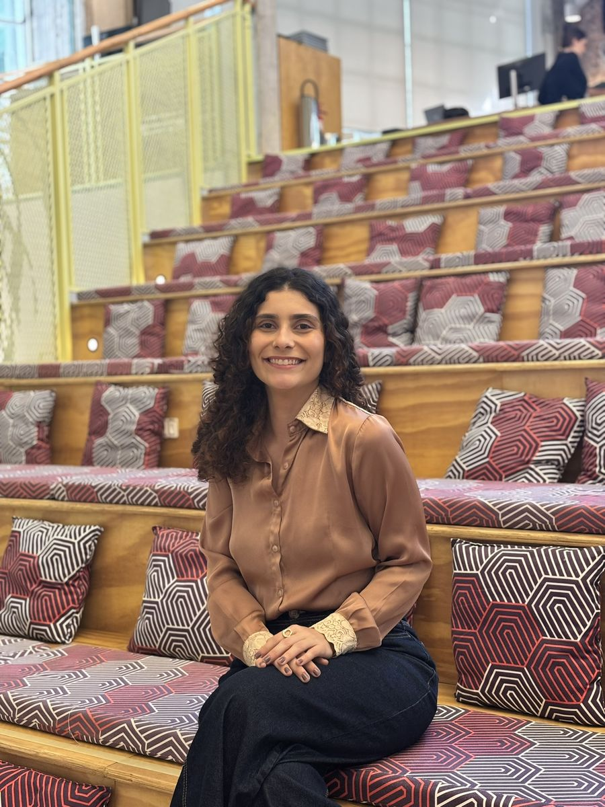
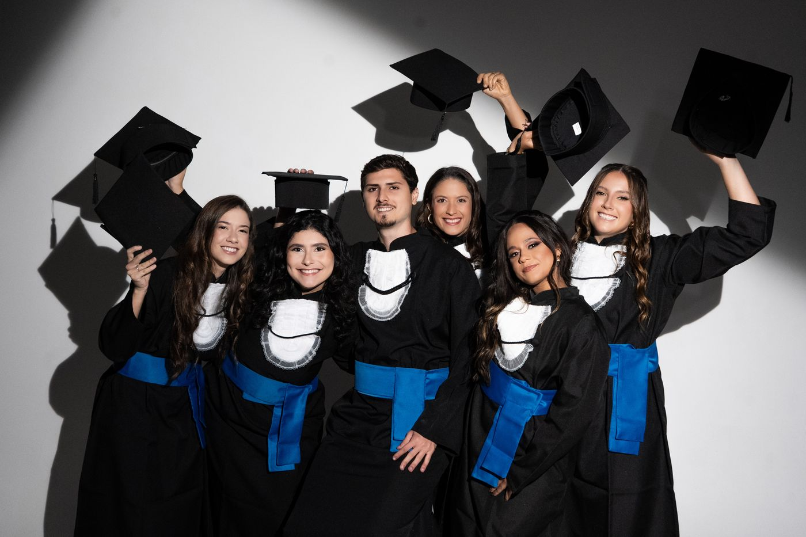
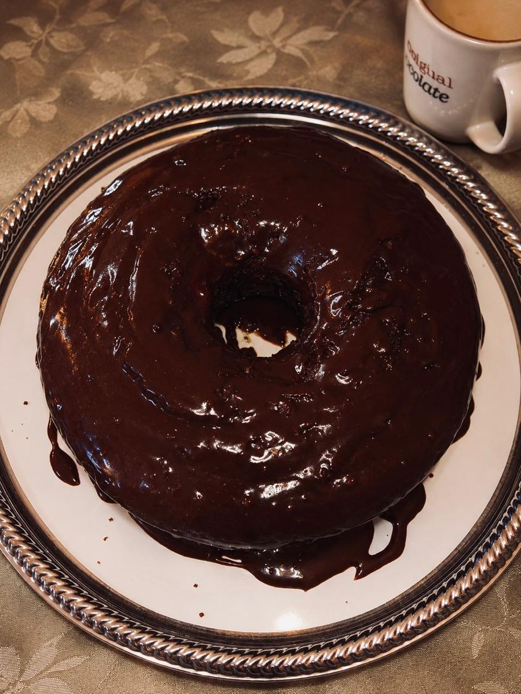

Isadora Rosalém
I'm a psychologist from Brazil. Whether in research, in therapy or in community projects, my work keeps returning to the same questions: how people relate to their emotions, to food and to their bodies, and what helps them do that with more care.
This site is a companion to my CV. It tells the stories behind my research, the places where my clinical and community work happened, and a little about my life outside work.

How my work connects
Four areas I move between, all centred on how people regulate emotion and look after their wellbeing.
Hover over or tap each area Emotion regulation and wellbeing
Emotion regulation and wellbeingEach area has its own colour, and you'll find it across the site, marking where each project and experience belongs.

Five years, many rooms
I studied Psychology at the Federal University of Espírito Santo (UFES) from 2020 to 2025. When I look back, what stands out is how many different places the degree took me: a neuroscience laboratory, the bariatric surgery service at the university hospital, a pediatric follow-up programme, a public school and the university's training clinic, where I saw my first patients under supervision.
The two research projects I joined, both supervised by Professor Lívia Carla de Melo Rodrigues, could hardly have been more different. One involved rats, behavioural tests and statistics; the other, small groups of women practising mindfulness together on Monday mornings at the hospital. Around them were outreach work with families and with other students, and a student neuroscience league.
B.A. in Psychology
Federal University of Espírito Santo
Graduated October 2025 · final GPA
Where to go from here

Research
A mindfulness group in a hospital and an experimental neuroscience lab: what we studied and what I did.
Read the stories →
Experience
Psychotherapy today, and the outreach projects, teaching and communities around it.
See more →
Outside work
Trails, the sea, books, museums, movement and cooking.
Have a look →
Get in touch
If something here interests you, whether research, clinical work or a shared project, I'd be glad to hear from you.